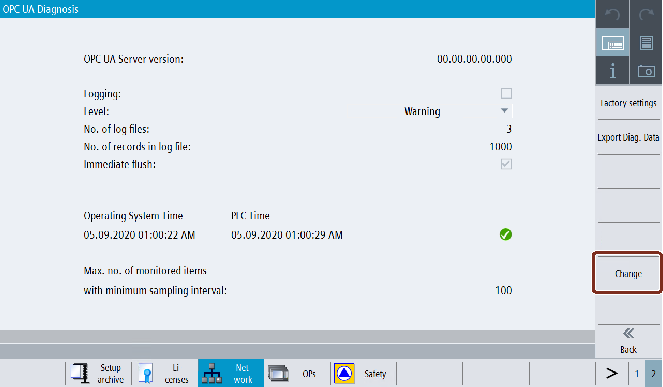
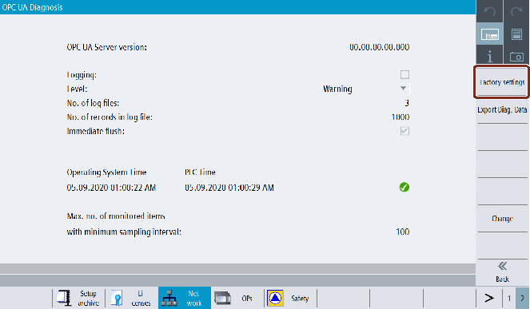
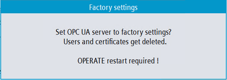
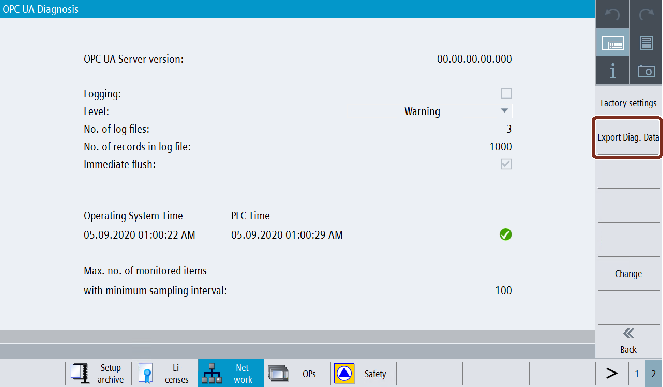
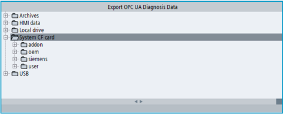
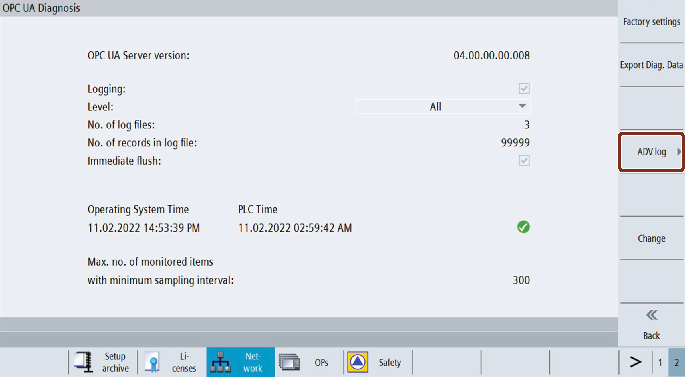
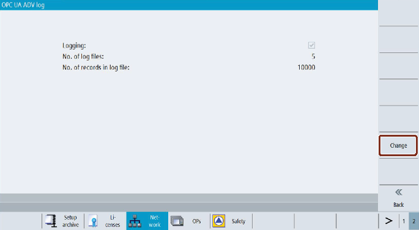

Diagnosis screen offers support for troubleshooting and service for OEM with SIEMENS. Diagnosis functionalities are used only for service purpose.
From the Diagnosis screen user can:
Activate or deactivate the OPC UA Server logging.
Configure OPC UA Server logging.
Reset the OPC UA Server to factory settings.
Export the diagnosis data to an external data storage (for example, USB/Networkshare).
Activate or deactivate OPC UA Advanced logging and change parameters.
| Note |
|
Diagnosis softkey is visible by default only for manufacturer, service and user access levels. |
Press the "OPC UA" softkey.
Press the extended softkey as shown in the below image.
| Note |
|
If the extended softkey is disabled then it means the OPC UA Server license is not active. |
Press the "Diagnosis" softkey.
| Note |
|
The "Diagnosis" softkey will not be visible if OPC UA Server is not actiavted. User need to activate the OPC UA Server from the OPC UA settings screen. |
Softkey Diagnosis
The "OPC UA Diagnosis" dialog will appear. Then press the "Change" softkey.
Softkey Change
Make the necessary settings for logging.
| Note |
|
The changes become effective only after the restart of the SINUMERIK Operate. |
Activate Logging option
Field | Description |
|---|---|
"OPC UA Server Version" | Shows the OPC UA Server version installed. |
"Logging" | Place the checkmark to activate logging and remove the checkmark to deactivate it. By activating logging, it generates the log of the OPC UA Server. |
"Level" | Select the type of level from the drop down list. The drop down list has the following types of level:
The log will be generated based on the selection of level type. No log will be generated if you have activated logging and selected "None" from the list. |
"No. of log files" | Enter the no. of log files between 3 - 10. If the user selects 10, and the 10th log file is already generated, then it will replace the 1st log file. |
"No. of records in log file" | Enter the no. of records in log file between 1000 - 99999. If the user selects 99999, and the 99999th record is already generated, then it will replace the 1st record. |
"Immediate flush" | Place the checkmark to activate the immediate flush and remove the checkmark to deactivate it. By activating immediate flush, every record will be written immediately into the log file. This option should be used only for logging without delays. |
"Operating System Time and PLC Time" | Operating System and PLC date and time are displayed. The tick icon indicates that the PLC time is in sync with the operating system (HMI Operate) time. If the date and time is not in sync, icon is shown and it indicates that time should be updated. |
"Max. no. of monitored items with minimum sampling interval" | This field provides information about the max. no. of items which can be monitored with minimum sampling interval". |
Then press "OK".
The changes become effective only after the restart of the SINUMERIK Operate.
| Note |
|
If the OPC UA server logging is activated for more than 30 days, then it will be automatically disabled on the next HMI restart. |
This helps the user to reset the OPC UA configuration of the SINUMERIK device to its initial state. This would be helpful when the current OPC UA configuration is not valid and needs to be reset.
User shall use this as the last option to reconfigure the OPC UA server to its initial state. All settings, IP, Port, and certificates will be deleted and the default values will be restored.
After the restart of the SINUMERIK Operate, OPC UA server need to be activated again with necessary changes.
| Note |
|
On factory reset, model settings are set to default and model settings cannot be changed with user access level. |
| Note |
|
Make sure to have an OPC UA archive before starting the process of resetting the OPC UA server to factory settings. |
Press the "OPC UA" softkey.
Press the extended softkey.
Press the "Diagnosis" softkey. The "OPC UA Diagnosis" dialog will appear.
Then press the "Factory settings" softkey.
Softkey Factory Settings
The "Factory settings" popup window will appear.
Factory settings popup
| Note |
If the user performs factory settings, the OPC UA Server will be reset to default setting. User need to enable the OPC UA Server again from the OPC UA settings screen. |
Then press "OK". A status message is shown at the bottom, "changes become effective after the restart of OPERATE".
This feature exports the OPC UA configuration, log files and other diagnostic information from the SINUMERIK system, onto the selected location on SINUMERIK file system.
This can be used to analyze details of behavior of the system or root cause of the situation in case of problems.
Press the "OPC UA" softkey.
Press the extended softkey.
Press the "Diagnosis" softkey. The "OPC UA Diagnosis" dialog will appear.
Then press the "Export Diag. data" softkey.
Softkey Export Diag data
The "Export OPC UA Diagnosis Data" popup window will appear.
Export OPC UA Diagnosis data popup
Select location on SINUMERIK file system.
Then press "OK".
The diagnosis data will be saved to the folder (as selected location on SINUMERIK file system) in the format "OpcUaDiagnosisData_Year_Month_Day-Hour_Minute_Second",(for example: "OpcUaDiagnosisData_2020_06_22-11_12_56").
If you have activated the additional license for OPC UA Advanced, you can set the parameters for OPC UA Advanced logging.
Press the "OPC UA" softkey.
Press the extended softkey.
Press the "Diagnosis" softkey. The "OPC UA Diagnosis" dialog will appear.
Then press the "ADV log" softkey.
Softkey ADV log
The "OPC UA Adv log" dialog will appear. You can read the settings for OPC UA Advanced logging.
ADV log dialog
Press the "Change" softkey"
Activate the OPC UA Advanced logging with the corresponding checkbox.
Set the parameters for OPC UA Advanced log file.
Parameters | Value | |
|---|---|---|
Min | Max | |
Number of log files | 3 | 10 |
Number of record in the log file | 10,000 | 99,999 |
| Note |
Maximum values reachedIf the maximum number of log files is reached and each file contains the maximum number of records, the oldest log file will automatically be deleted and a new log file will be created. |
Press "OK". The settings for OPC UA Advanced logging are saved.
You can find further information on the OPC UA Advanced logging functionality in chapter OPC UA Advanced logging.